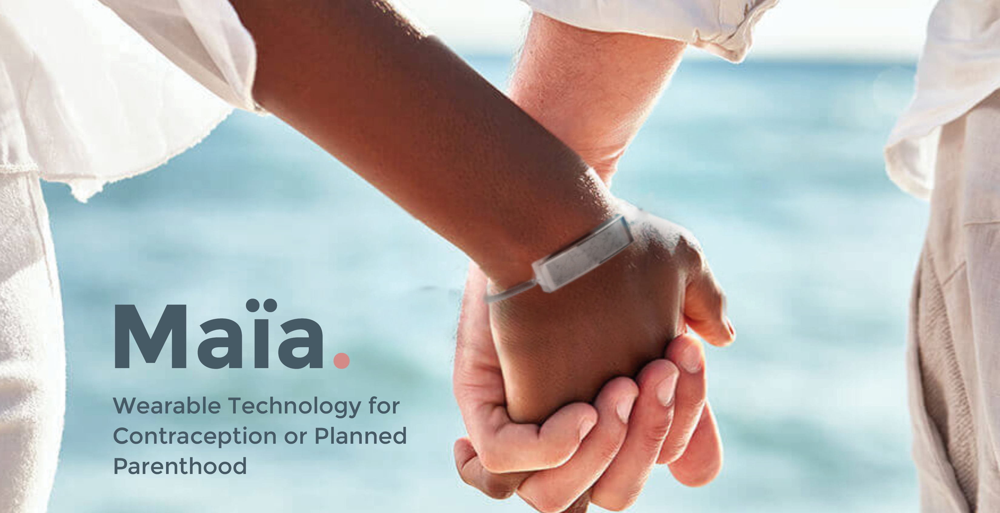

Maia
Maia
Personal Project for School

(Original icons from FreePik)
The PDF version of the project can be found here:
CONTEXT:
The premise of the school project is to create a product that follows the critical project drivers: a set of drivers created at the beginning of the project outlining product goals and restrictions. The emerging product is a wearable technology for contraception or planned parenthood. It measures a woman's basal wrist temperatures to calculate her ovulation cycle, and notify the user when or when not to use additional protection.
SIDE EFFECTS OF HORMONAL BIRTH CONTROL
The short-term and long-term side effects of hormonal birth control has long been a heated debate. Note that it is a woman's personal choice what methods they choose, and many do have minimal effects with such medication. However, there are some that do find themselves trying a new form of hormonal birth control every few months, once they have concluded its side effects too severe to continue. Unfortunately, the fear of unplanned pregnancy keeps them dependent on hormonal birth control.
Below is a video that beautifully narrates the potential side-effects of hormonal birth control. While it is a story of a woman taking BC for other health reasons, and may not apply to every woman, it still provides good context for those unfamiliar with this topic.
If a woman prefers not to use hormonal BC, this leaves non-hormonal BC, such as condoms. However, condoms are linked with misusage and discomfort, thus is also not an ideal choice.
IT IS TIME TO RETHINK BIRTH CONTROL AND PLANNED PARENTHOOD
As you can see, traditional methods of birth control, such as condoms and hormonal pills, has long been perceived as the only available method by the general public. What most don’t know is that women have an ovulation cycle for conceiving: only a specifc amount of days out of the total cycle can she conceive. This cycle can be calculated through measuring her basal temperatures.
BASAL TEMPERATURES & OVULATION CYCLE:
Given a standard 28-day cycle, only 5/28 days is a woman fertile: the chances of conceiving outside of those 5 days fall to 0%. A woman's basal temperature correlates with her Estrogen, LH, and Progesterone levels, meaning her ovulation cycle. Thus, by tracking daily basal temperatures, it can provide an alternative method for contraception and planned parenthood. The bracelet signifies the user when to use, or not use, additional protection during intercourse. It is non-intrusive, non-hormonal, and has no side-effects.
CRITICAL PROJECT DRIVERS:
A set of drivers are created at the beginning of the project outlining product goals and restrictions. It is an active document that is updated along the design process. The hierarch of drivers indicates order of importance: which drivers should be given priority with the alloted time and budgeting.